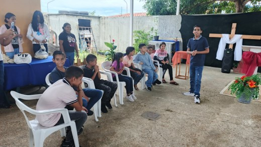
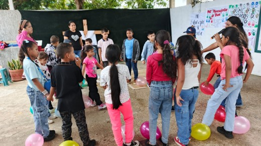
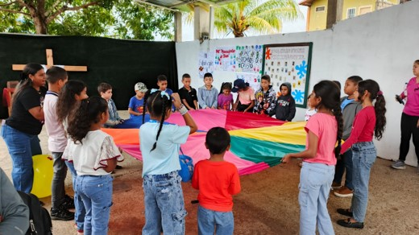

Nuestros Orígenes
Éste video muestra la primera Capilla del Movimiento Metodista, servía también como Escuela y lugar de residencia. La estructura del templo muestra cómo fue diseñada para enfrentar la persecución que sufrieron, los ataques que recibían de manera injustificada y los continuos esfuerzos y peligros que asumían. Pincha Aquí para ver el video completo.
IML Casa de Dios en Acción
Participa en nuestra Escuela Bíblica Vacacional, desde el Jueves 31 de Julio al Domingo 03 de Agosto. Te esperamos...
Anuncios

La Fidelidad de Dios




El Señor Viene Pronto...